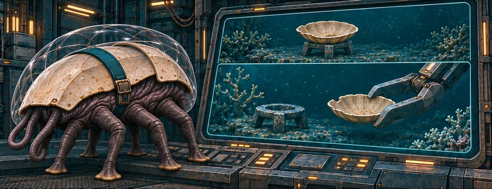
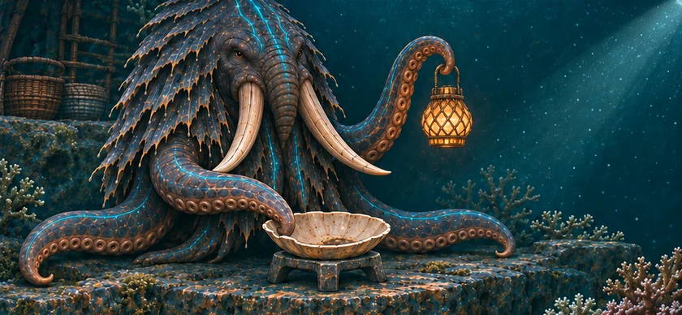
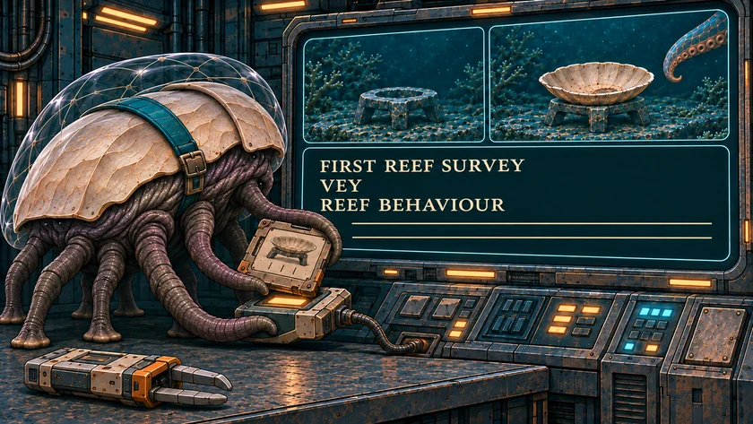

THE ORUUN · FROM ABOVE
The Shell That Moved
Siv surveys the rock before the cutter comes.
For two hundred years, the Dryborn have taken from the first alien people humanity will meet. They could have known.
The Dryborn cut the reefs to power the Reach’s gates. They build the network; they own none of it. Their crews mistake Oruun homes and lamps for wild reef life. An early warning was filed away.



Read the words
Siv’s machine lifts a shell from a low stone stand. The cutter will need that patch of rock.
The shell is back on the same stand. Siv searches the earliest reef surveys.
Siv finds Vey’s old report: “These patterns look like answers.” It was filed as reef behaviour; the cutting continued.